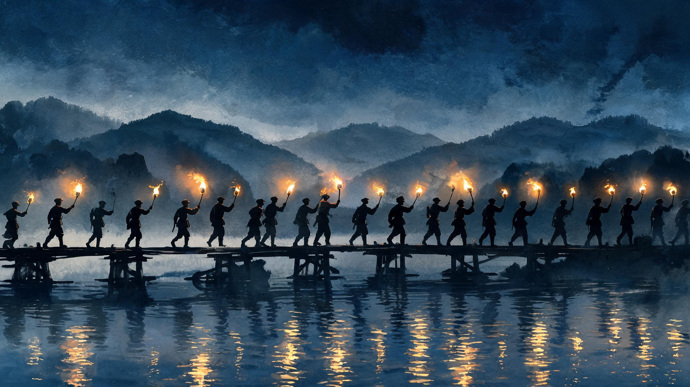
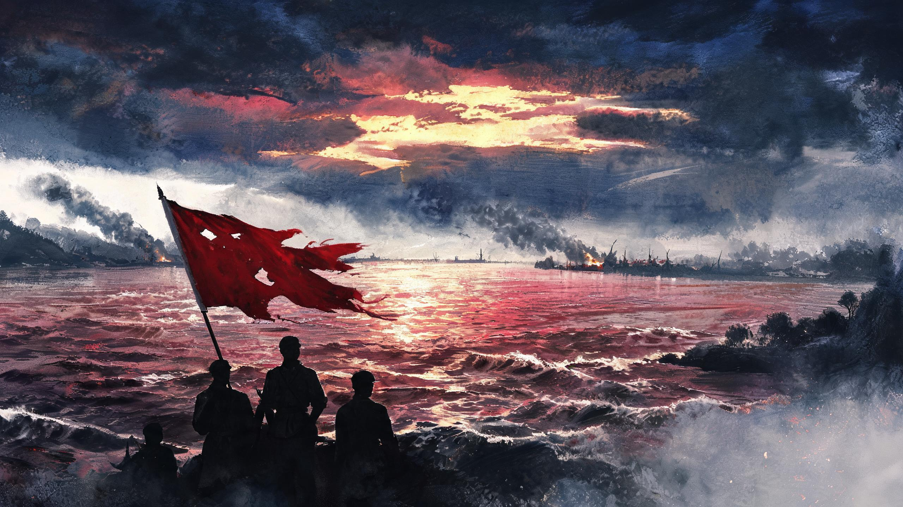
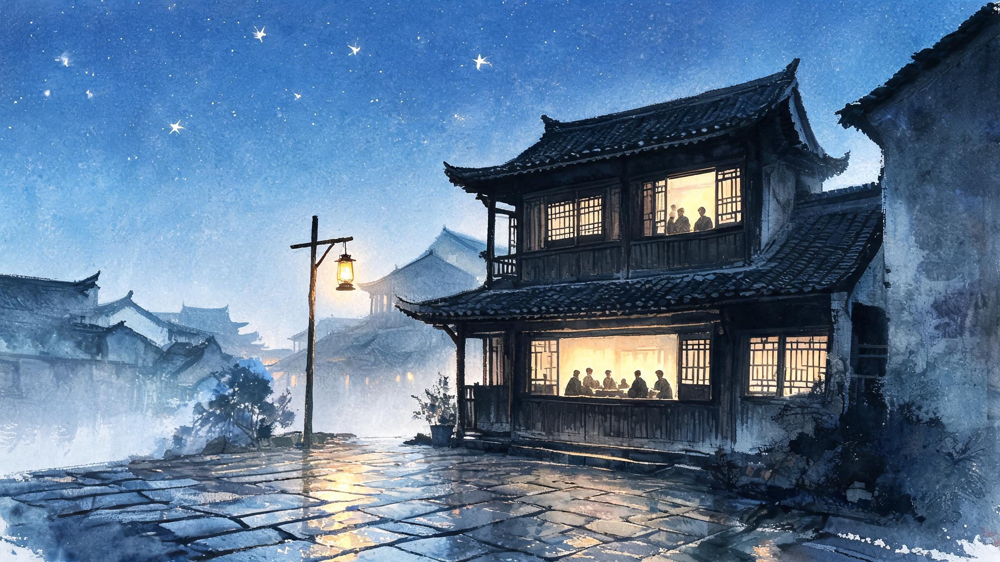
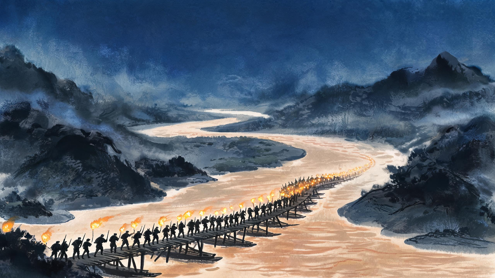
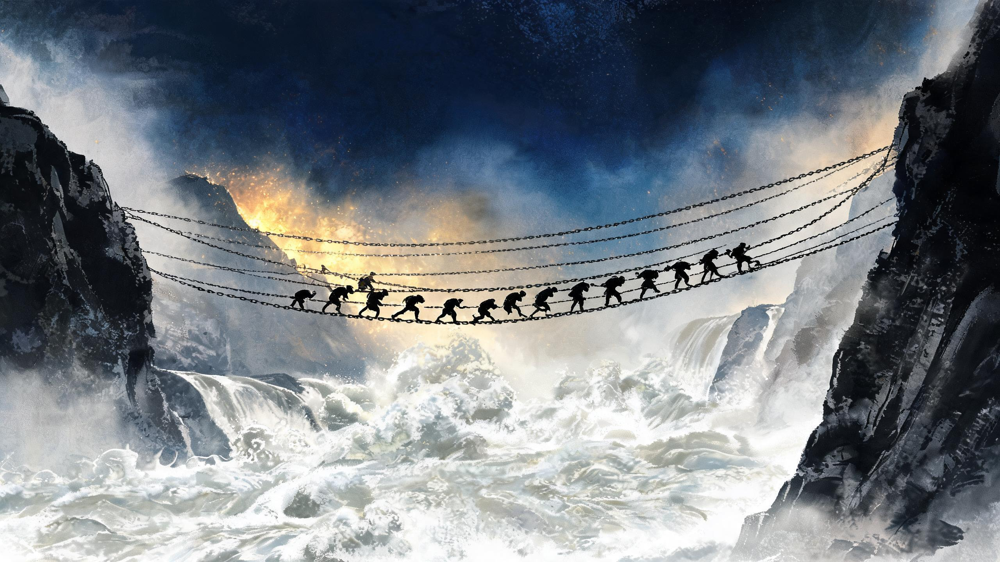
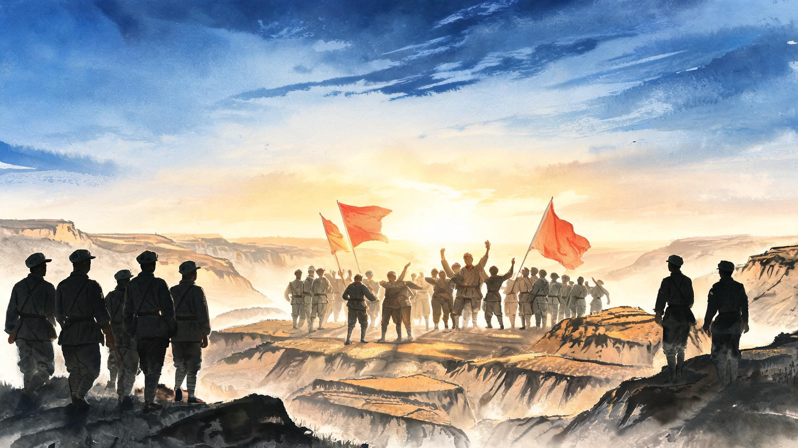

史
✦ 图中还有其他星标 · 继续探索
1934.10 —— 1936.10
纪念中国工农红军长征胜利九十周年
两年，二万五千里，一场改变中国命运的远征。
以图卷、影像与原创配乐，重走这条星火之路。
建议开启声音 · 滚轮 / 方向键 / 轻扫，皆可随军前行
点击任一星标，直达那段征程 —— 或随大军逐站前行

中央红军八万六千余人，从于都河畔的浮桥上悄悄走过，踏上战略转移之路。桥板拆了又搭，浮桥架了又收——于都人守着这个秘密，直到大军西去。
那几夜，于都河上架起多座浮桥。为了不暴露行踪，所有灯火在黎明前熄灭；为了架桥，于都人拆下了自家的门板、床板，甚至寿材。周恩来在河畔感慨："于都人民真好，苏区人民真亲。"

五昼夜，长征中最惨烈的一役。红军以血肉之躯撕开第四道封锁线，中央红军由出发时的八万六千余人，锐减至三万余人。
担任全军后卫的红三十四师战至弹尽粮绝。师长陈树湘腹部中弹被俘，他趁敌不备，从伤口处绞断肠子，壮烈牺牲，年仅二十九岁——"为苏维埃新中国流尽最后一滴血。"
按住不放（或连点），背起行囊过江——别松手，追兵就在身后。
五里浮桥，走完就是西岸。
"三年不饮湘江水，十年不食湘江鱼。"
——战后，桂北百姓口口相传

一场只开了三天的会议，在最危急的历史关头，挽救了党、挽救了红军、挽救了中国革命。
会议批评了博古、李德在军事指挥上的错误，增选毛泽东为中央政治局常委。此后，中央红军在毛泽东等指挥下，四渡赤水、巧渡金沙，彻底扭转被动局面。
会上陈列了三种主张。把错误的两条，亲手划掉。
为什么说遵义会议是"生死攸关的转折点"？

三个月内，三万红军四次渡过赤水河，牵着四十万追兵在川黔滇边界反复兜圈，跳出重围、掌握主动。
一渡西进、二渡回师、三渡再入、四渡南下——红军忽东忽西、忽南忽北，把数十万追兵拖得疲于奔命，随后虚指贵阳、威逼昆明，五月初巧渡金沙江，彻底跳出包围圈。

红四团一昼夜急行军二百四十里，赶到泸定桥头。二十二名勇士攀着十三根光溜溜的铁索，冒着弹雨，夺下了这座桥。
接到命令时，红四团距离泸定桥还有二百四十里。大雨滂沱、山路泥泞，他们昼夜兼程，终于在拂晓赶到桥头——对岸守军纵火焚桥，铁索在火光中发烫，桥下是大渡河的惊涛。
红军为什么必须夺下泸定桥，等船渡河不行吗？
翻越一座座海拔四千米以上的大雪山，再踏入松潘草地——纵横五百余里的水草地吞噬了无数草鞋。缺氧、严寒、饥饿，每前进一步，都可能有人永远留下。
雪线之上空气稀薄，一步一喘；草皮之下是黑色的泥沼，一脚踩空就再难起身。粮食断绝，战士们煮皮带、挖草根，把生的希望留给战友。
班上只剩最后一件棉衣。风越来越紧，你把它——

红一、红二方面军在将台堡会师。历时两年，红军三大主力齐聚西北——举世震惊的长征，至此胜利结束。中国革命大本营，奠基西北。
红军第一、第二、第四方面军先后在甘肃会宁、宁夏将台堡会师。两年间，各路红军纵横十余省、跋涉数万里，衣衫褴褛却信念如铁——他们把火种带到了陕北。
红军不怕远征难，万水千山只等闲。
五岭逶迤腾细浪，乌蒙磅礴走泥丸。
金沙水拍云崖暖，大渡桥横铁索寒。
更喜岷山千里雪，三军过后尽开颜。
——毛泽东《七律·长征》 一九三五年十月毛泽东为什么说，长征是"宣言书、宣传队、播种机"？
90年前的这个十月，星星之火，自此燎原。
每一个数字，都是用生命走出来的。
每一代人都有每一代人的长征路，每一代人都要走好自己的长征路。
纪念中国工农红军长征胜利九十周年